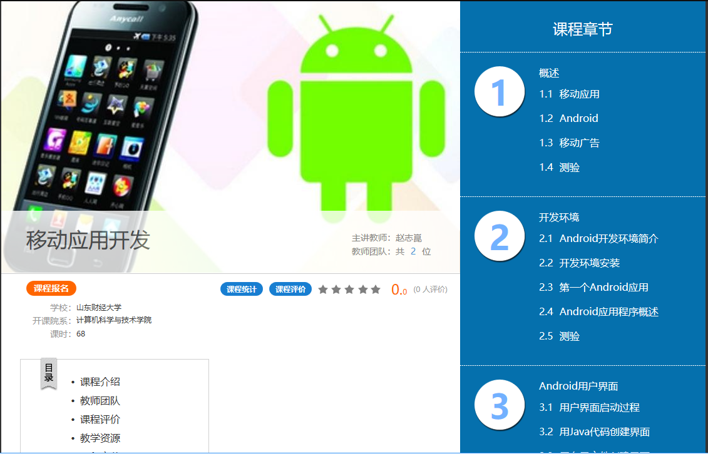

（点击上面的链接跳转到超星泛雅平台的课程主页）
本课程负责人赵志崑几十年一直工作在软件开发和教学一线，精通Java语言，熟悉Android平台，开发了多智够级、多智拖拉机、华容道四百关等Android应用，下载量达几十万次。
本课程讲解Android应用开发技术，分为三个大的模块。第一个模块介绍用户界面，包括界面组织与开发、布局管理器、用户操作响应、消息提示与对话框、菜单等，最后以几个典型的用户界面结束。第二个模块介绍Android基本部件，包括Activity、Intent、SQLite数据库、ContentProvider、BroadcastReceiver、Service等。第三个模块介绍特色功能，包括多媒体、网络、位置和地图服务、传感器、绘图、动画等。
本课程每一个知识点都提供了简单但典型的例子，使用的开发环境是AndroidStudio。
通过本课程的学习，学生应该能够掌握Android应用的开发技术，了解如何实现各种功能。